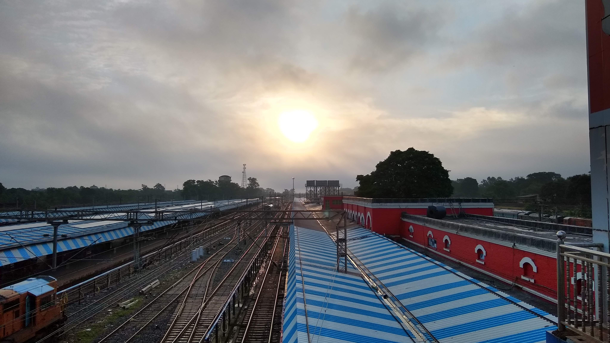

Arnab Bag
Ph.D. Research Scholar
Secured Embedded Architecture Laboratory
Department of Computer Science and Engineering
Indian Institute of Technology Kharagpur


Research Interests
Cryptography, Hardware Security, VLSI Design, VLSI Architecture, Side-Channel Analysis, Quantum Computation, Quantum Cryptography, Quantum Information Processing
Education
2017 July - Current
Department of Computer Science and Engineering,
Indian Institute of Technology, Kharagpur
Institute Research Fellow under the supervision of Professor Debdeep Mukhopadhyay.
2012 July - 2017 April
Department of Electronics and Electrical Communication Engineering,
Indian Institute of Technology, Kharagpur
B.Tech + M.Tech Dual Degree
2010 - 2012
Patha-Bhavana
Visva-Bharati Central University
2001 - 2010
Patha-Bhavana
Visva-Bharati Central University
Publications
Hardware Acceleration of Searchable Encryption 
A Bag, S Patranabis, L Tribhuvan, D Mukhopadhyay
Cryptographically Secure Multi-tenant Provisioning of FPGAs 
A Bag, S Patranabis, DB Roy, D Mukhopadhyay
Fault Template Attacks on Block Ciphers Exploiting Fault Propagation 
S Saha, A Bag, DB Roy, S Patranabis, D Mukhopadhyay
Neural Network based Inherently Fault-Tolerant Cryptographic Primitives without Explicit Redundancy Checks (To Appear) 
M Alam, A Bag, DB Roy, D Jap, J Breier, S Bhasin, D Mukhopadhyay
FlexiPair: An Automated Programmable Framework for Pairing Cryptosystems (Under Review) 
A Bag, DB Roy, S Patranabis, D Mukhopadhyay
Leakage Assessment in Fault Attacks: A Deep Learning Perspective 
S Saha, M Alam, A Bag, D Mukhopadhyay, P Dasgupta
Pushing the Limits of Fault Template Attacks: The Role of Side-Channels 
S Saha, A Bag, D Mukhopadhyay
A Review on Emotion Recognition Using Speech 
S Basu, J Chakraborty, A Bag, M Aftabuddin
Emotion Recognition Based on Physiological Signals Using Valence-arousal Model 
S Basu, N Jana, A Bag, M Mahadevappa, J Mukherjee, S Kumar, R Guha
Affect Detection in Normal Groups With the Help of Biological Markers 
S Basu, A Bag, M Mahadevappa, J Mukherjee, R Guha
Effects of Emotion on Physiological Signals 
S Basu, A Bag, M Aftabuddin, M Mahadevappa, J Mukherjee, R Guha
Book Chapter
Fault-tolerant Implementations of Physically Unclonable Functions on FPGA 
DP Sahoo, A Bag, S Patranabis, D Mukhopadhyay, RS Chakraborty
Project
Secured Hardware Extension
Department of Computer Science and Engineering,
Indian Institute of Technology, Kharagpur
May. 2017 - September. 2017 (Short-term participation)
- Developed native hardware implementation of an Automotive Secured Hardware Extension and tested on FPGA as a part of the project LPI-1 : Formal Methods for Physical Security Verification of Cryptographic Designs against Fault Attacks, sponsored by Synopsys USA.
Internship
National Remote Sensing Centre, Indian Space Research Organisation
Hyderabad, Telengana, INDIA
Summer Research Intern
- Design of Custom PLL-based Clock Recovery System for Indigenous Satellite Downlink Demodulator
- Hardware Rmplementation of the Clock Recovery System
- Technical Visit to Data Acquisition and Analysis Facility of ISRO at Sadhnagar, Hyderabad, Telengana
Teaching Experience
Teaching Assistant
High Performance Computer Architecture CS60003
PG Depth Course
Teaching Assistant
Cryptography and Network Security CS60041
UG Elective Course
Teaching Assistant
High Performance Computer Architecture CS60003
PG Depth Course
Teaching Assistant
Computer Organization and Architecture CS31001
UG Breadth Course
Teaching Assistant
Hardware Security CS60004
PG Elective Course
Teaching Assistant
Digital Signal Processing EC31008
UG Laboratory Course
Teaching Assistant
Network Theory EC29005
UG Laboratory Course
Academic Services
- ACM/IEEE DAC
- IACR CHES
- IACR Indocrypt
- IEEE TrustCom
- IEEE TVLSI
- ACM JETC
- Sadhana (Springer)
- RESS (Elsevier)
- Cyber Physical System Security (CPSS)
Indian Institute of Technology, Kharagpur, 2019
Competitions
Member of winning team of HACK@DAC’18 hardware security contest held at San-Francisco, CA, USA with ACM/IEEE DAC 2018. The task was to find bugs/vulnerabilities in Pulpino RISC-V core.
Developed an autonomous maze solver robot, which can find its own way out from a maze as part of the GeoAware competition at Kshitij 2014, IIT Kharagpur.
Skillsets
- Cryptographic Hardware
- FPGA-based Design
- ASIC Design
- Hardware-Software Co-design/Systems
- Xilinx Vivado
- Synopsys Design Compiler
- Synopsys IC Compiler
- Cadence Virtuoso
- Synopsys PrimeTime
- Synopsys VCS
- MentorGraphics Calibre
- Synopsys Custom Designer
- Verilog
- C++
- Python
- TCL
- High-resolution Oscilloscope, Signal Generator, and Logic Analyzer with Custom Application-based Control
- Laser Pulse Injection Platform
- Power and Electromagnetic Trace Acquisition, Cartography and Electromagnetic Fault Injection
- Carl Zeiss Crossbeam 340 High-resolution Scanning Electron Microscope
- Carl Zeiss Crossbeam 340 Focused Ion Beam System
Files
Extras
by the god of mathematics - Leonhard Euler
Interesting Papers
- Quantum Tokens for Digital Signatures
- Cryptographic Assumptions: A Position Paper
- Quantum Negacyclic Codes
- ‘‘Ooh Aah… Just a Little Bit’’ : A Small Amount of Side Channel Can Go a Long Way
- Highly-Scalable Searchable Symmetric Encryption with Support for
Boolean Queries - From Cbits to Qbits: Teaching computer scientists quantum mechanics
- Quantum Copy-Protection and Quantum Money
- Quantum Money from Hidden Subspaces
Knowledge!
Books to Read
- Gödel, Escher, Bach: An Eternal Golden Braid
- The Road to Reality: A Complete Guide to the Laws of the Universe ✔️
- Quantum computing: A gentle introduction ✔️
- The Billion Dollar Spy: A True Story of Cold War Espionage and Betrayal ✔️
- The Rise and Fall of the Third Reich: A History of Nazi Germany
- Mossad ✔️
- Antifragile: Things That Gain from Disorder
Interesting Links
Interesting GitHub repos.
- LaTeX Templates
- Shower Presentation Framework
- C++ Library Collection
- Hello World in Every Language
- OpenRAM Memory Compiler
- TikZ Collection
- TFHE Implementation
- x86 Examples
Useful Linux Commands
- Find appearances of a string in files inside a directory
grep -rnw '/path/to/somewhere/' -e 'pattern'
- Register new libraries
sudo ldconfig -n -v /usr/local/lib
- Add library path to system
sudo gedit /etc/ld.so.conf.d/<library_name>.conf
#Add library path to <library_name>.conf
sudo ldconfig
- Download all files from a given url
wget -r -np -R "index.html*" http://example.com/example_subdir/
- Screen Record with audio
ffmpeg -video_size 1920x1080 -framerate 24 -f x11grab -i :0.0+0,0 -f alsa -ac 2 -i pulse zacodec aac -strict experimental output_screen.mp4
- Camera Record
ffmpeg -f v4l2 -framerate 90 -video_size 1280x720 -input_format mjpeg -i /dev/video1 output_camera.mkv
- Screen and Camera Record
ffmpeg -f v4l2 -framerate 25 -video_size 640x480 -i /dev/video0 -f x11grab -framerate 100 -video_size 1600x900 -i :0.0 -filter_complex "[0:v]pad=iw:900:0:(oh-ih)/2[left];[left][1:v]hstack" output_scrcam.mp4
- Record terminal
showterm <executable_name>
- Create and update symbolic links in Linux
ln -s /path/to/file /path/to/symlink #Create
ln -sf /path/to/file /path/to/symlink #Update
- Extract pages from PDF files
qpdf --pages <input_file>.pdf <page_number_start - page_number_stop> -- <input_file>.pdf <output_file>.pdf
- Crop a PDF
pdfcrop --margins '-<left> -<top> -<right> -<bottom>' <input_file>.pdf <output_file>.pdf
- Count Number of Lines in File
wc -l <file_name>
- Remove steiner cells/nets in Cadence Virtuoso
cv=geGetEditCellView()
foreach( item cv~>steiners
dbDeleteObject( item )
)
- Number of Instructions Executed
valgrind --tool=callgrind --dump-instr=yes ./<program_name>
#Use kcachegrind tool to view the results
I do enjoy clicking sometimes ☺️.
For more, visit

